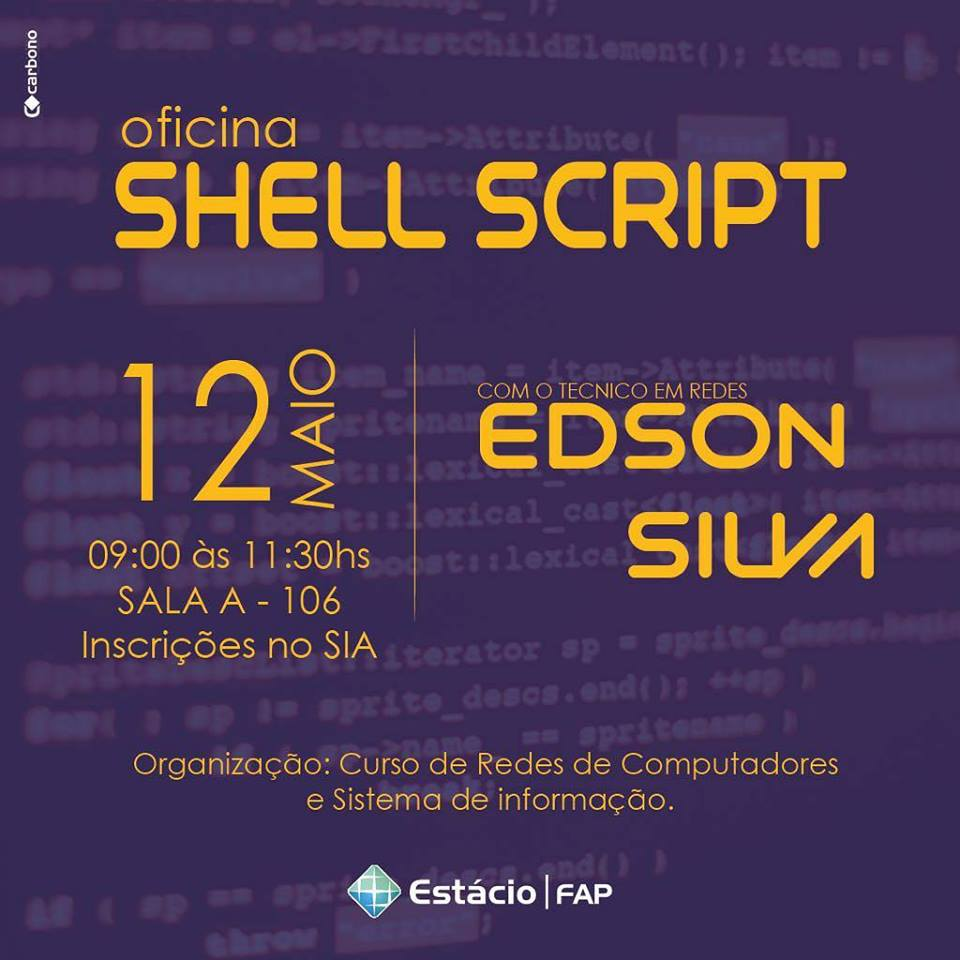
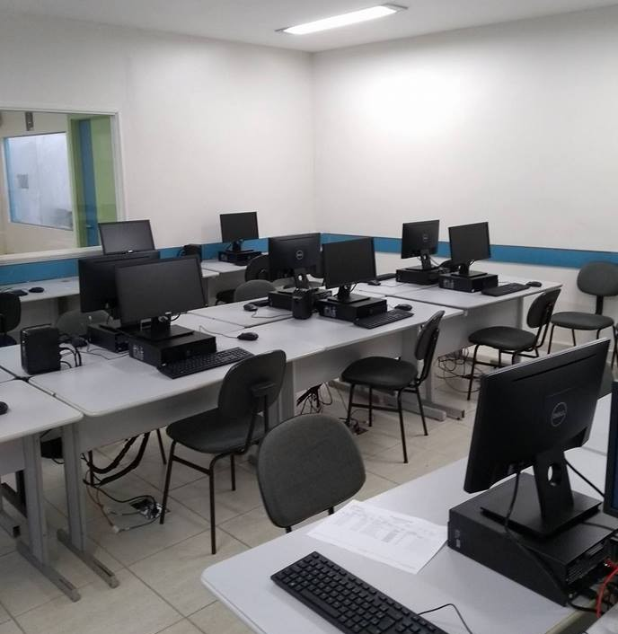
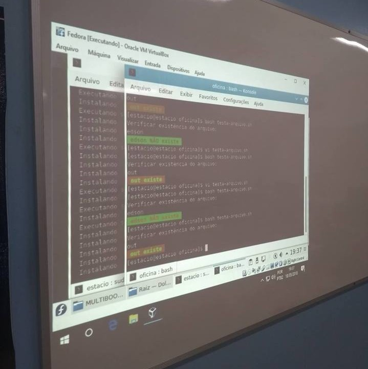

Se você já leu a página 'About me' deste site, sabe que me envolvi com eventos durante um bom tempo da minha graduação. No último ano e no seguinte ministrei uma palestra e um minicurso, respectivamente. Em 2015, dei uma pausa por causa do mestrado e algumas outras coisas.
O que conseguiu me impulsionar de volta aos trilhos foi a raspagem de dados. Tanto que tenho alguns posts aqui sobre essa técnica: Raspagem de Dados. Sobretudo, o que me atrai muito é utilizar programação para tratar textos.
Shell Script foi um dos meus maiores interesses quando começei a utilizar o Linux. Lembro-me de quando criava scripts e os colocava para iniciar junto com o sistema. Teve uma vez em que o Ubuntu que usava tinha um bug quanto a disposição das teclas do meu notebook. Era um script escrito em Shell que resolvia isso toda vez que a máquina iniciava. :D
Quando comecei a utilizar o Debian e a mexer com desenvolvimento web, criei este script para instalação do LAMP e outros pacotes: nossaQScript. Sim! Eu sempre fui muito criativo com nomes de projetos hahaha.
Lembrar de tudo isso foi uma motivação e tanto para aceitar o convite de ministrar uma oficina sobre Shell Script na Faculdade Estácio do Pará (FAP). O pedido: prática, prática e prática. Com o convite aceito não tive dificuldade em montar os slides e de lembrar das coisas que havia aprendido. Estava tudo quentinho na minha mente.

Confesso que estava nervoso no sábado (12/05) de madrugada, quando tive que viajar para a cidade de Belém. Peguei o ônibus das 5:30 da manhã. Cheguei cedo para preparar o datashow e a máquina que iria utilizar durante a oficina.

Como o laboratório que foi reservado para a oficina possuia apenas o sistema operacional Windows instalado nas máquinas, tivemos que virtualizar. E lógico, a distribuição escolhida foi o Fedora. ;)

Ocorreu tudo bem. Tive um feedback bem legal dos participantes que demonstraram bastante interesse no que eu dizia. Isso me animou bastante. Eu, realmente, tinha esquecido o quanto era bom a sensação de ensinar algo relacionado a tecnologia da informação. O legal foi que acertei no conteúdo e na forma de como ensinar.
Creio que o que eles mais gostaram foi de ver a saída de scripts piscando com as letras e fundos coloridos rsrs.
Espero ter outras oportunidades como essa. Deixo meu agradecimento ao Profº Alexandre que me fez o convite. Estou me preparando para que, quem sabe, na próxima eu possa estar tratando sobre raspagem de dados.
Obrigado por ler até aqui. Até mais.
Go Top
comments powered by Disqus